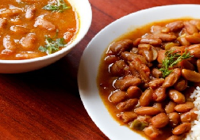

|  | Rajma masala or rice is one of the delicious and famous recipe at any Punjabi family or Jammu Kashmir. It’s her extraordinary recipe and it is extraordinary in one more sense. It’s actually, simple and easy recipe. Overall a delicious easy rajma masala or curry. |
Ingredients: 1 cup rajma/red kidney beans, about 200 gms, dripping instant in plenty water, 2.5 cups water for cooking, 1 green chili, sliced, 1 table spoon sliced garlic ½ inch ginger, 1 tablespoon chopped ginger 7 to 8 medium garlic, 3 medium tomatoes cut, about 200 gms, 1 large onion cut, about 100 gms, ½ tsp turmeric powder, ½ tsp red chili powder, ¾ to 1 tsp garam masala powder, 1 tsp amchur powder, 1 tsp cumin seeds, 2 table spoon butter or oil, salt as required. Method: Rajma beans for a combine of times in running water, then saturate the rajma beans in plentiful water overnight or for 8 to 9 hours, next day or next 8 to 9 hours, ditch the soaked water, again rajma beans in fresh water drain them and keep apart, chop the veggies onion, tomatoes, ginger, garlic and green chilies. keep apart in a pressure cooker add the rajma beside with the chopped onion, tomatoes, ginger, garlic and green chilies and add the spices cumin seeds, red chili powder, turmeric powder and salt as required pour water mix very well add butter or oil again mix it shield tightly and pressure cook for 18 to 20 whistles on a high flame, once the pressure calm down on its own, open the cover and check the beans, rajma has to be grilled completely, if the beans are still not cooked completely, then add about ½ cup more of water and cook again for 5 to 6 whistles, once the beans are cooked well, then check the gravy or curry also, you will see thin water like stock with the tomatoes and onions floating, so you have to continue to simmer the rajma masala till the curry thickens a bit, keep the cooker on stove top and on a low to medium flame, simmer without cap, mixing at intervals, when you keep the curry on the stove top, then add dry mango powder add garam masala powder also, mix well and simmer the curry till the consistency thickens, when the consistency of the curry is no longer broth like or water like and thickened, then the rajma masala is ready. if you want you can thicken the gravy more, if having with chapatis or phulkas, serve rajma masala with some steamed rice or with chapatis, parathas or bread.
|
||||

Crispy Pizza
Crispy Pizza and Pressed Panini authentic recipe One of the very famous Street Italian food.
Golden Chicken
Crispy and curried Golden chicken recipe for cooking Golden Chicken ghastly.